Transformer P2_Decoder¶
约 11180 个字 预计阅读时间 37 分钟
Decoder – Autoregressive (AT)¶
Decoder其实有两种，接下来会花比较多时间介绍，比较常见的 Autoregressive Decoder，这个 Autoregressive 的 Decoder，是怎么运作的
用语音辨识，来当作例子来说明，或用在作业里面的机器翻译，其实是一模一样的，你只是把输入输出，改成不同的东西而已
语音辨识就是输入一段声音，输出一串文字，你会把一段声音输入给 Encoder，比如说你对机器说，机器学习，机器收到一段声音讯号，声音讯号 进入 Encoder以后，输出会是什么，输出会变成一排 Vector
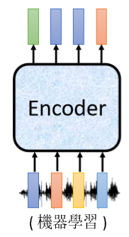
Encoder 做的事情，就是输入一个 Vector Sequence，输出另外一个 Vector Sequence
接下来，就轮到 Decoder 运作了，Decoder 要做的事情就是产生输出，也就是产生语音辨识的结果， Decoder 怎么产生这个语音辨识的结果
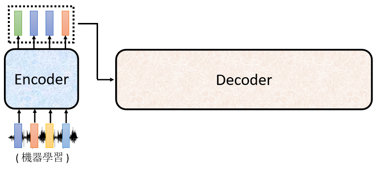
Decoder 做的事情，就是把 Encoder 的输出先读进去，至于怎么读进去，这个我们等一下再讲 我们先，你先假设 Somehow 就是有某种方法，把 Encoder 的输出读到 Decoder 里面，这步我们等一下再处理
Decoder 怎么产生一段文字
首先，你要先给它一个特殊的符号，这个特殊的符号，代表开始，在助教的投影片里面，是写 Begin Of Sentence，缩写是 BOS
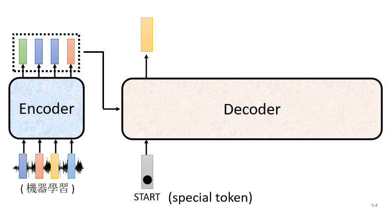
就是 Begin 的意思，这个是一个 Special 的 Token，你就是在你的个 Lexicon 里面，你就在你可能，本来 Decoder 可能产生的文字里面，多加一个特殊的字，这个字就代表了 BEGIN，代表了开始这个事情
在这个机器学习里面，假设你要处理 NLP 的问题，每一个 Token，你都可以把它用一个 One-Hot 的 Vector 来表示，One-Hot Vector 就其中一维是 1，其他都是 0，所以 BEGIN 也是用 One-Hot Vector 来表示，其中一维是 1，其他是 0
接下来Decoder 会吐出一个向量，这个 Vector 的长度很长，跟你的 Vocabulary 的 Size 是一样的
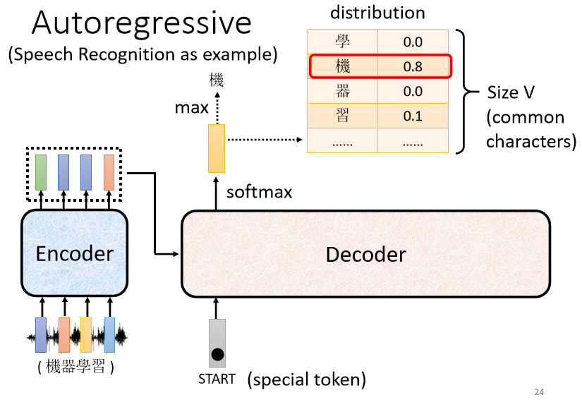
Vocabulary Size 是什么意思呢？
你就先想好说，你的 Decoder 输出的单位是什么，假设我们今天做的是中文的语音辨识，我们 Decoder 输出的是中文，你这边的 Vocabulary 的 Size ，可能就是中文的方块字的数目
不同的字典，给你的数字可能是不一样的，常用的中文的方块字，大概两三千个，一般人，可能认得的四五千个，在更多都是罕见字 冷僻的字，所以你就看看说，你要让你的 Decoder，输出哪些可能的中文的方块字，你就把它列在这边
举例来说，你觉得这个 Decoder，能够输出常见的 3000 个方块字就好了，就把它列在这个地方，不同的语言，它输出的单位 不见得不会不一样，这个取决于你对个语言的理解
比如说英文，你可以选择输出字母的 A 到 Z，输出英文的字母，但你可能会觉得字母这个单位太小了，有人可能会选择输出英文的词汇，英文的词汇是用空白作为间隔的，但如果都用词汇当作输出，又太多了
所以你会发现，刚才在助教的投影片里面，助教说他是用 Subword 当作英文的单位，就有一些方法，可以把英文的字首字根切出来，拿字首字根当作单位，如果中文的话，我觉得就比较单纯，通常今天你可能就用中文的这个方块字，来当作单位
每一个中文的字，都会对应到一个数值，因为在产生这个向量之前，你通常会先跑一个 Softmax，就跟做分类一样，所以这一个向量里面的分数，它是一个 Distribution，也就是，它这个向量里面的值，它全部加起来，总和会是 1
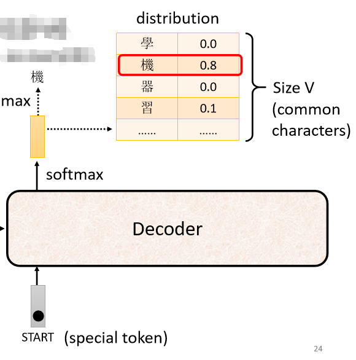
分数最高的一个中文字，它就是最终的输出
在这个例子里面，机的分数最高，所以机，就当做是这个 Decoder 第一个输出
然后接下来，你把“机”当做是 Decoder 新的 Input，原来 Decoder 的 Input，只有 BEGIN 这个特别的符号，现在它除了 BEGIN 以外，它还有“机”作为它的 Input
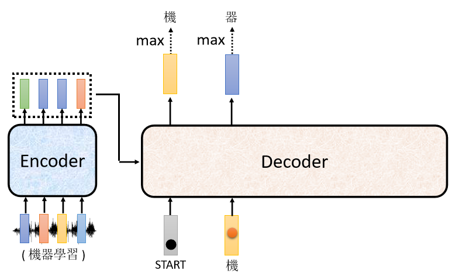
所以 Decoder 现在它有两个输入
- 一个是 BEGIN 这个符号
- 一个是“机”
根据这两个输入，它输出一个蓝色的向量，根据这个蓝色的向量里面，给每一个中文的字的分数，我们会决定第二个输出，哪一个字的分数最高，它就是输出，假设"器"的分数最高，"器"就是输出
然后现在 Decoder
- 看到了 BEGIN
- 看到了"机"
- 看到了"器"
它接下来，还要再决定接下来要输出什么，它可能，就输出"学"，这一个过程就反复的持续下去
所以现在 Decode
-
看到了 BEGIN
-
看到了"机"
-
看到了"器"
-
还有"学"
Encoder 这边其实也有输入，等一下再讲 Encoder 的输入，Decoder 是怎么处理的，
所以 Decoder 看到 Encoder 这边的输入，看到"机" 看到"器" 看到"学"，决定接下来输出一个向量，这个向量里面，"习"这个中文字的分数最高的，所以它就输出"习"
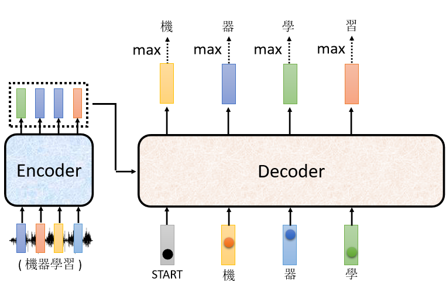
然后这个 Process ，就反复持续下去，这边有一个关键的地方，我们特别用红色的虚线把它标出来
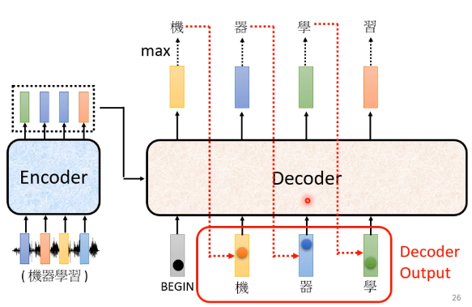
也就是说 Decoder 看到的输入，其实是它在前一个时间点，自己的输出，Decoder 会把自己的输出，当做接下来的输入
如果 Decoder 看到错误的输入，让 Decoder 看到自己产生出来的错误的输入，再被 Decoder 自己吃进去，会不会造成 Error Propagation 的问题
Error Propagation 的问题就是，一步错 步步错这样，就是在这个地方，如果不小心把机器的“器”，不小心写成天气的"气"，会不会接下来就整个句子都坏掉了，都没有办法再产生正确的词汇了?
是有可能的，这个等一下我们最后会稍微讲一下这个问题要怎么处理，我们现在先无视这个问题，继续走下去
我们来看一下 Decoder 内部的结构长什么样子
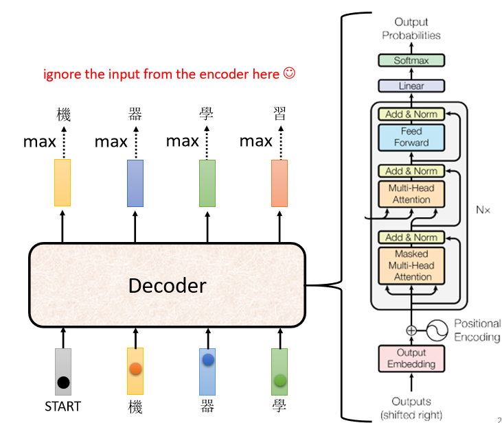
那我们这边，把 Encoder 的部分先暂时省略掉，那在 Transformer 里面，Decoder 的结构，长得是这个样子的，看起来有点复杂，比 Encoder 还稍微复杂一点，
那我们现在先把 Encoder 跟 Decoder 放在一起
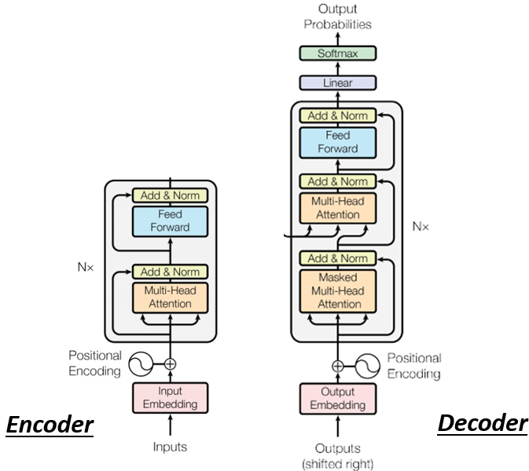
稍微比较一下它们之间的差异，那你会发现说，如果我们把 Decoder 中间这一块，中间这一块把它盖起来，其实 Encoder 跟 Decoder，并没有那么大的差别
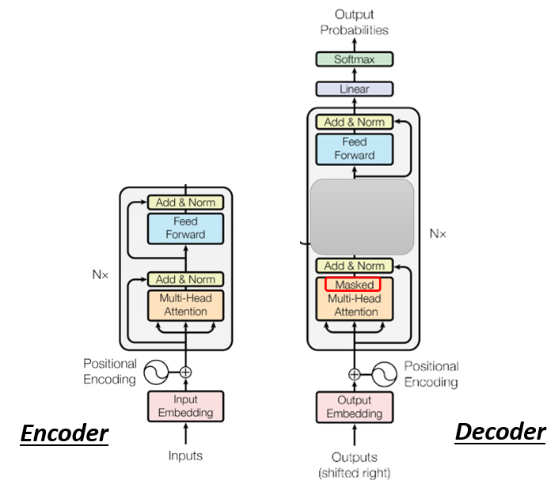
你看 Encoder 这边，Multi-Head Attention，然后 Add & Norm，Feed Forward，Add & Norm，重复 N 次，Decoder 其实也是一样
当我们把中间这一块遮起来以后，我们等一下再讲，遮起来这一块里面做了什么事，但当我们把中间这块遮起来以后，欸 那 Decoder 也是，有一个 Multi-Head Attention，Add & Norm，然后 Feed Forward，然后 Add & Norm，所以 Encoder 跟 Decoder，其实并没有非常大的差别，除了中间这一块不一样的地方，
那只是最后，我们可能会再做一个 Softmax，使得它的输出变成一个机率，那这边有一个稍微不一样的地方是，在 Decoder 这边，Multi-Head Attention 这一个 Block 上面，还加了一个 Masked，
这个 Masked 的意思是这样子的，这是我们原来的 Self-Attention
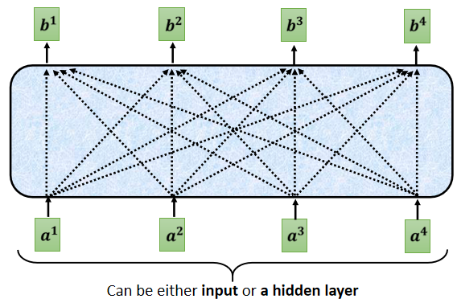
Input 一排 Vector，Output 另外一排 Vector，这一排 Vector 每一个输出，都要看过完整的 Input 以后，才做决定，所以输出 \(b^1\) 的时候，其实是根据 \(a^1\) 到 \(a^4\) 所有的资讯，去输出 \(b^1\)
当我们把 Self-Attention，转成 Masked Attention 的时候，它的不同点是，现在我们不能再看右边的部分，也就是产生 \(b^1\) 的时候，我们只能考虑 \(a^1\) 的资讯，你不能够再考虑 \(a^2\) \(a^3\) \(a^4\)
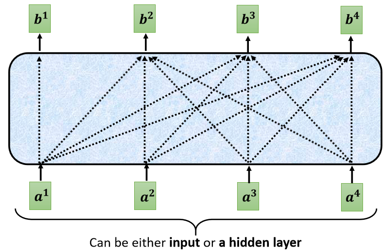
产生 \(b^2\) 的时候，你只能考虑 \(a^1\) \(a^2\) 的资讯，不能再考虑 \(a^3\) \(a^4\) 的资讯
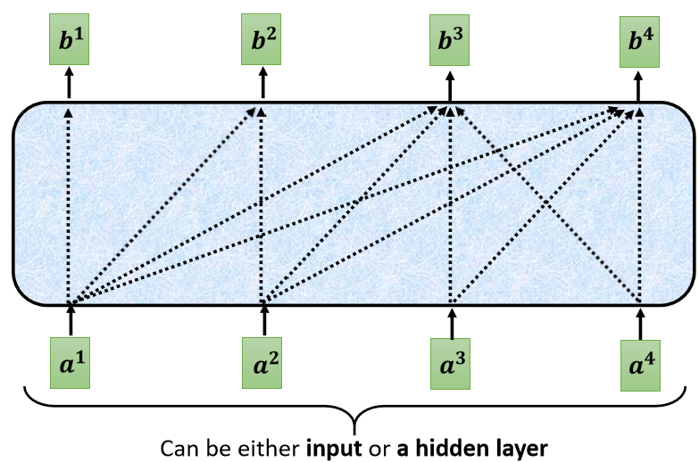
产生 \(b^3\) 的时候，你就不能考虑 \(a^4\) 的资讯，
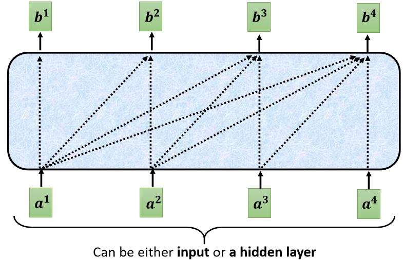
产生 \(b^4\) 的时候，你可以用整个 Input Sequence 的资讯，这个就是 Masked 的 Self-Attention，
讲得更具体一点，你做的事情是，当我们要产生 \(b^2\) 的时候，我们只拿第二个位置的 Query \(b^2\)，去跟第一个位置的 Key，和第二个位置的 Key，去计算 Attention，第三个位置跟第四个位置，就不管它，不去计算 Attention
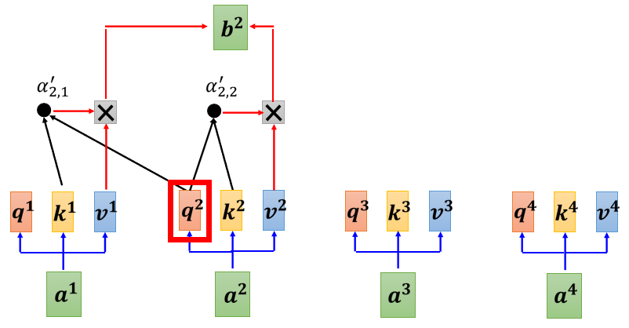
我们这样子不去管这个 \(a^2\) 右边的地方，只考虑 \(a^1\) 跟 \(a^2\)，只考虑 \(q^1\) \(q^2\)，只考虑 \(k^1\) \(k^2\)，\(q^2\) 只跟 \(k^1\) 跟 \(k^2\) 去计算 Attention，然后最后只计算 \(b^1\) 跟 \(b^2\) 的 Weighted Sum
然后当我们输出这个 \(b^2\) 的时候，\(b^2\) 就只考虑了 \(a^1\) 跟 \(a^2\)，就没有考虑到 \(a^3\) 跟 \(a^4\)
那为什么会这样，为什么需要加 Masked
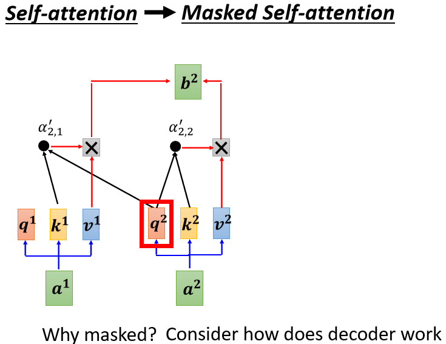
这件事情其实非常地直觉：我们一开始 Decoder 的运作方式，它是一个一个输出，所以是先有 \(a^1\) 再有 \(a^2\)，再有 \(a^3\) 再有 \(a^4\)
这跟原来的 Self-Attention 不一样，原来的 Self-Attention，\(a^1\) 跟 \(a^4\) 是一次整个输进去你的 Model 里面的，在我们讲 Encoder 的时候，Encoder 是一次把 \(a^1\) 跟 \(a^4\)，都整个都读进去
但是对 Decoder 而言，先有 \(a^1\) 才有 \(a^2\)，才有 \(a^3\) 才有 \(a^4\)，所以实际上，当你有 \(a^2\)，你要计算 \(b^2\) 的时候，你是没有 \(a^3\) 跟 \(a^4\) 的，所以你根本就没有办法把 \(a^3\) \(a^4\) 考虑进来
所以这就是为什么，在那个 Decoder 的那个图上面，Transformer 原始的 Paper 特别跟你强调说，那不是一个一般的 Attention，这是一个 Masked 的 Self-Attention，意思只是想要告诉你说，Decoder 它的 Tokent，它输出的东西是一个一个产生的，所以它只能考虑它左边的东西，它没有办法考虑它右边的东西
讲了 Decoder 的运作方式，但是这边，还有一个非常关键的问题，Decoder 必须自己决定，输出的 Sequence 的长度
可是到底输出的 Sequence 的长度应该是多少，我们不知道
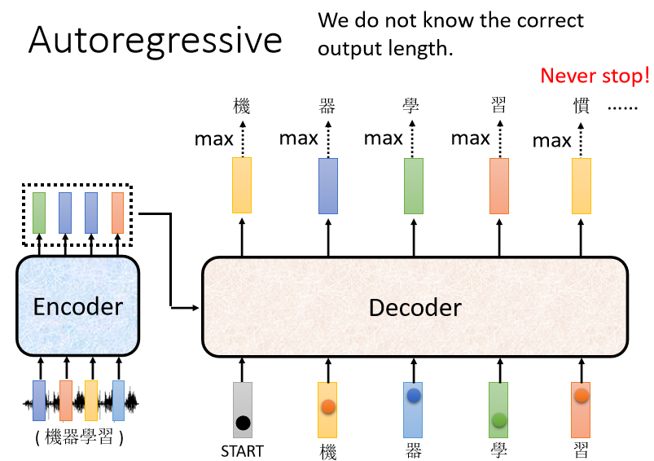
你没有办法轻易的从输入的 Sequence 的长度，就知道输出的 Sequence 的长度是多少，并不是说，输入是 4 个向量，输出一定就是 4 个向量
这边在这个例子里面，输入跟输出的长度是一样的，但是你知道实际上在你真正的应用里面，并不是这样，输入跟输出长度的关系，是非常复杂的，我们其实是期待机器可以自己学到，今天给它一个 Input Sequence 的时候，Output 的 Sequence 应该要多长
但在我们目前的这整个 Decoder的这个运作的机制里面，机器不知道它什么时候应该停下来，它产生完习以后，它还可以继续重复一模一样的 Process，就把习，当做输入，然后也许 Decoder ，就会接一个惯，然后接下来，就一直持续下去，永远都不会停下来
这就让我想到推文接龙
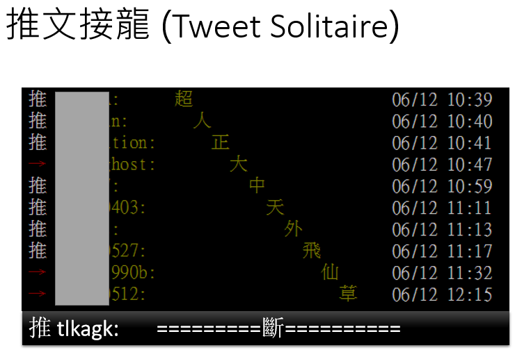
我不知道大家知不到这是什么，这是一个这个古老的民俗传统，流传在 PTT 上面，这个民俗传统是怎么运作的，就有一个人，先推一个中文字，然后推一个超，然后接下来，就会有另外一个乡民，去推另外一个字，然后可以接上去的，所以就可以产生一排的词汇啦，一排字啦，就是超人正大中天外飞仙草，不知道在说些什么，这个是 Process ，可以持续好几个月，都不停下来，我也不知道为什么，那怎么让这个 Process 停下来，那要怎么让它停下来
要有人冒险去推一个断，推个断，它就停下来了
所以我们要让 Decoder 做的事情，也是一样，要让它可以输出一个断，所以你要特别准备一个特别的符号，这个符号，就叫做断，我们这边，用 END 来表示这个特殊的符号
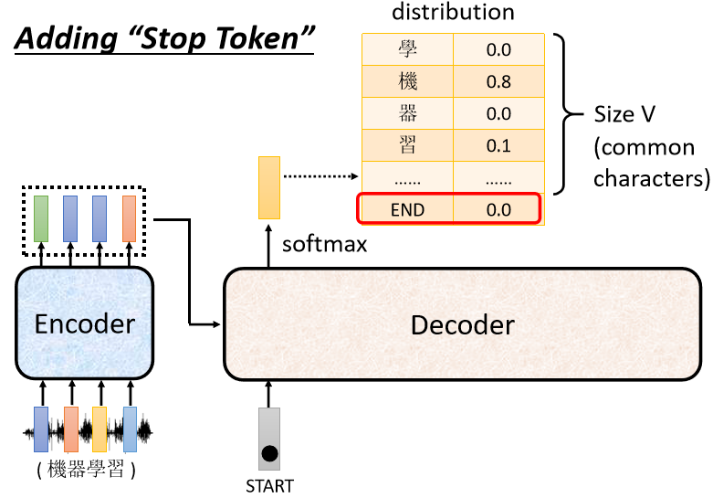
所以除了所有中文的方块字，还有 BEGIN 以外，你还要准备一个特殊的符号，叫做"断"，那其实在助教的程式里面，它是把 BEGIN 跟 END，就是开始跟这个断，用同一个符号来表示
反正这个，这个 BEGIN 只会在输入的时候出现，断只会在输出的时候出现，所以在助教的程式里面，如果你仔细研究一下的话，会发现说 END 跟 BEGIN，用的其实是同一个符号，但你用不同的符号，也是完全可以的，也完全没有问题
所以我们现在，当把"习"当作输入以后，就 Decoder 看到 Encoder 输出的这个 Embedding，看到了 "BEGIN"，然后"机" "器" "学" "习"以后，看到这些资讯以后 它要知道说，这个语音辨识的结果已经结束了，不需要再产生更多的词汇了
它产生出来的向量END，就是断的那个符号，它的机率必须要是最大的，然后你就输出断这个符号，那整个运作的过程，整个 Decoder 产生 Sequence 的过程，就结束了
这个就是 Autoregressive Decoder，它运作的方式
Decoder – Non-autoregressive (NAT)¶
用两页投影片，非常简短地讲一下，Non-Autoregressive 的 Model
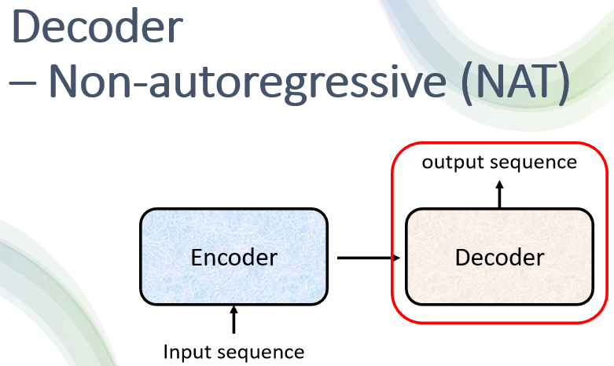
Non-Autoregressive ，通常缩写成 NAT，所以有时候 Autoregressive 的 Model，也缩写成 AT，Non-Autoregressive 的 Model 是怎么运作的呢
AT v.s. NAT¶
这个 Autoregressive 的 Model 是
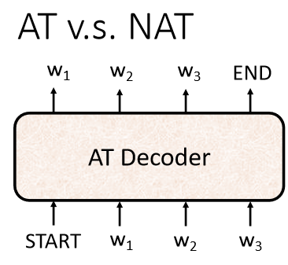
先输入 BEGIN，然后出现 w1，然后再把 w1 当做输入，再输出 w2，直到输出 END 为止
那 NAT 是这样，它不是依次产生
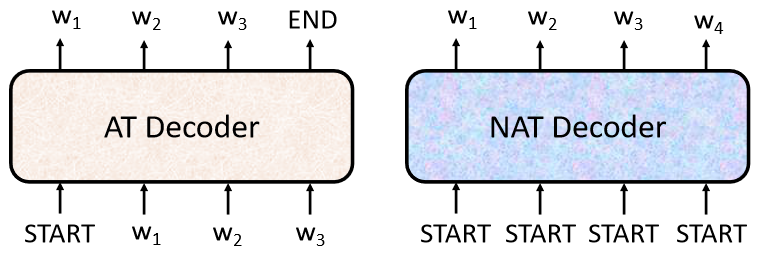
就假设我们现在产生是中文的句子，它不是依次产生一个字，它是一次把整个句子都产生出来
NAT 的 Decoder可能吃的是一整排的 BEGIN 的 Token，你就把一堆一排 BEGIN 的 Token 都丢给它，让它一次产生一排 Token 就结束了
举例来说，如果你丢给它 4 个 BEGIN 的 Token，它就产生 4 个中文的字，变成一个句子，就结束了，所以它只要一个步骤，就可以完成句子的生成
这边你可能会问一个问题：刚才不是说不知道输出的长度应该是多少吗，那我们这边怎么知道 BEGIN 要放多少个，当做 NAT Decoder 的输入？
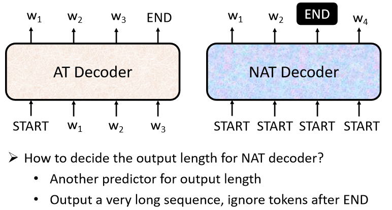
没错，这件事没有办法很自然的知道，没有办法很直接的知道，所以有几个做法
- 一个做法是，你另外 learn 一个 Classifier，这个 Classifier ，它吃 Encoder 的 Input，然后输出是一个数字，这个数字代表 Decoder 应该要输出的长度，这是一种可能的做法
- 另一种可能做法就是，你就不管三七二十一，给它一堆 BEGIN 的 Token，你就假设说，你现在输出的句子的长度，绝对不会超过 300 个字，你就假设一个句子长度的上限，然后 BEGIN ，你就给它 300 个 BEGIN，然后就会输出 300 个字嘛，然后，你再看看什么地方输出 END，输出 END 右边的，就当做它没有输出，就结束了，这是另外一种处理 NAT 的这个 Decoder，它应该输出的长度的方法
那 NAT 的 Decoder，它有什么样的好处，
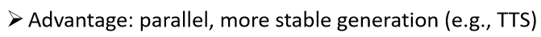
-
它第一个好处是，并行化，这个 AT 的 Decoder，它在输出它的句子的时候，是一个一个一个字产生的，所以你有你的，假设要输出长度一百个字的句子，那你就需要做一百次的 Decode
但是 NAT 的 Decoder 不是这样，不管句子的长度如何，都是一个步骤就产生出完整的句子，所以在速度上，NAT 的 Decoder 它会跑得比 AT 的 Decoder 要快，那你可以想象说，这个 NAT Decoder 的想法显然是在，由这个 Transformer 以后，有这种 Self-Attention 的 Decoder 以后才有的
因为以前如果你是用那个 LSTM，用 RNN 的话，那你就算给它一排 BEGIN，它也没有办法同时产生全部的输出，它的输出还是一个一个产生的，所以在没有这个 Self-Attention 之前，只有 RNN，只有 LSTM 的时候，根本就不会有人想要做什么 NAT 的 Decoder，不过自从有了 Self-Attention 以后，那 NAT 的 Decoder，现在就算是一个热门的研究的主题了
-
那 NAT 的 Decoder 还有另外一个好处就是，你比较能够控制它输出的长度，举语音合成为例，其实在语音合成里面，NAT 的 Decoder 算是非常常用的，它并不是一个什么罕见的招数
比如说有，所以语音合成今天你都可以用，Sequence To Sequence 的模型来做，那最知名的，是一个叫做 Tacotron 的模型，那它是 AT 的 Decoder
那有另外一个模型叫 FastSpeech，那它是 NAT 的 Decoder，那 NAT 的 Decoder 有一个好处，就是你可以控制你输出的长度，那我们刚才说怎么决定，NAT 的 Decoder 输出多长
你可能有一个 Classifier，决定 NAT 的 Decoder 应该输出的长度，那如果在做语音合成的时候，假设你现在突然想要让你的系统讲快一点，加速，那你就把那个 Classifier 的 Output 除以二，它讲话速度就变两倍快，然后如果你想要这个讲话放慢速度，那你就把那个 Classifier 输出的那个长度，它 Predict 出来的长度乘两倍，那你的这个 Decoder ，说话的速度就变两倍慢
所以你可以如果有这种 NAT 的 Decoder，那你有 Explicit 去 Model，Output 长度应该是多少的话，你就比较有机会去控制，你的 Decoder 输出的长度应该是多少，你就可以做种种的变化
NAT 的 Decoder 最近它之所以是一个热门研究主题，就是它虽然表面上看起来有种种的厉害之处，尤其是平行化是它最大的优势，但是 NAT 的 Decoder 的 Performance，往往都不如 AT 的 Decoder
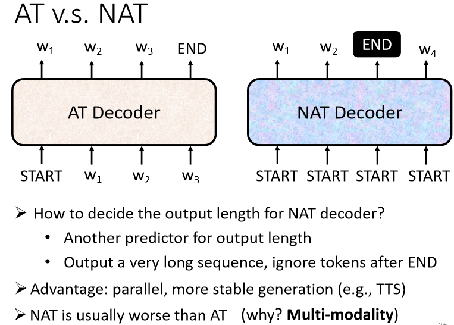
所以发现有很多很多的研究试图让，NAT 的 Decoder 的 Performance 越来越好，试图去逼近 AT 的 Decoder，不过今天你要让 NAT 的 Decoder，跟 AT 的 Decoder Performance 一样好，你必须要用非常多的 Trick 才能够办到，就 AT 的 Decoder 随便 Train 一下，NAT 的 Decoder 你要花很多力气，才有可能跟 AT 的 Performance 差不多
为什么 NAT 的 Decoder Performance 不好，有一个问题我们今天就不细讲了，叫做 Multi-Modality 的问题，那如果你想要这个深入了解 NAT，那就把之前上课，助教这个上课补充的内容，链接https://youtu.be/jvyKmU4OM3c放在这边给大家参考
Encoder-Decoder¶
接下来就要讲 Encoder 跟 Decoder 中间是怎么传递资讯的了，也就是我们要讲，刚才我们刻意把它遮起来的那一块
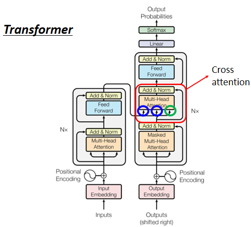
这块叫做 Cross Attention，它是连接 Encoder 跟 Decoder 之间的桥梁，那这一块里面啊，会发现有两个输入来自于 Encoder，Encoder 提供两个箭头，然后 Decoder 提供了一个箭头，所以从左边这两个箭头，Decoder 可以读到 Encoder 的输出
那这个模组实际上是怎么运作的呢，那我们就实际把它运作的过程跟大家展示一下
这个是你的 Encoder
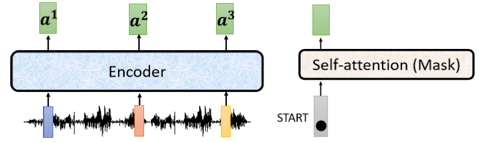
输入一排向量，输出一排向量，我们叫它 \(a^1 a^2 a^3\)
接下来 轮到你的 Decoder，你的 Decoder 呢，会先吃 BEGIN 当做，BEGIN 这个 Special 的 Token，那 BEGIN 这个 Special 的 Token 读进来以后，你可能会经过 Self-Attention，这个 Self-Attention 是有做 Mask 的，然后得到一个向量，就是 Self-Attention 就算是有做 Mask，还是一样输入多少长度的向量，输出就是多少向量
所以输入一个向量 输出一个向量，然后接下来把这个向量呢，乘上一个矩阵做一个 Transform，得到一个 Query 叫做 q
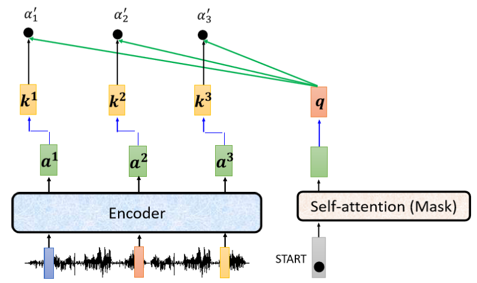
然后这边的 \(a^1 a^2 a^3\) 呢，也都产生 Key，Key1 Key2 Key3，那把这个 q 跟 \(k^1 k^2 k^3\)，去计算 Attention 的分数，得到 \(α_1 α_2 α_3\)，当然你可能一样会做 Softmax，把它稍微做一下 Normalization，所以我这边加一个 '，代表它可能是做过 Normalization
接下来再把 \(α_1 α_2 α_3\)，就乘上 \(v^1 v^2 v^3\)，再把它 Weighted Sum 加起来会得到 v
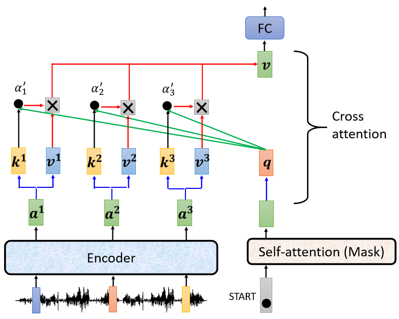
那这一个 V，就是接下来会丢到 Fully-Connected 的，Network 做接下来的处理，那这个步骤就是 q 来自于 Decoder，k 跟 v 来自于 Encoder，这个步骤就叫做 Cross Attention
所以 Decoder 就是凭借着产生一个 q，去 Encoder 这边抽取资讯出来，当做接下来的 Decoder 的 Fully-Connected 的 Network 的 Input
当然这个，就现在假设产生第二个，第一个这个中文的字产生一个“机”，接下来的运作也是一模一样的
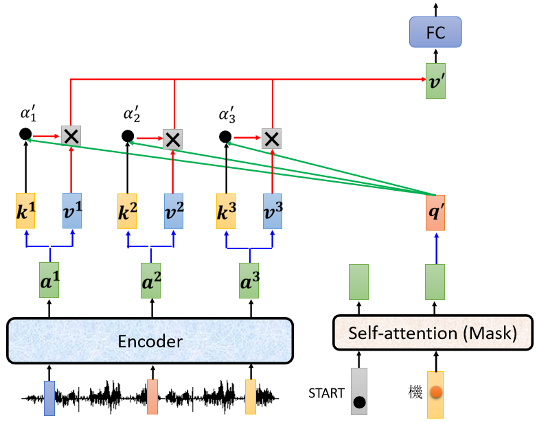
输入 BEGIN 输入机，产生一个向量，这个向量一样乘上一个 Linear 的 Transform，得到 q'，得到一个 Query，这个 Query 一样跟 \(k^1 k^2 k^3\)，去计算 Attention 的分数，一样跟 \(v^1 v^2 v^3\) 做 Weighted Sum 做加权，然后加起来得到 v'，交给接下来 Fully-Connected Network 做处理
所以这就是Cross Attention 的运作的过程
也许有人会有疑问：那这个 Encoder 有很多层啊，Decoder 也有很多层啊，从刚才的讲解里面好像听起来，这个 Decoder 不管哪一层，都是拿 Encoder 的最后一层的输出这样对吗？
对，在原始 Paper 里面的实做是这样子，那一定要这样吗
不一定要这样，你永远可以自己兜一些新的想法，所以我这边就是引用一篇论文告诉你说，也有人尝试不同的 Cross Attension 的方式
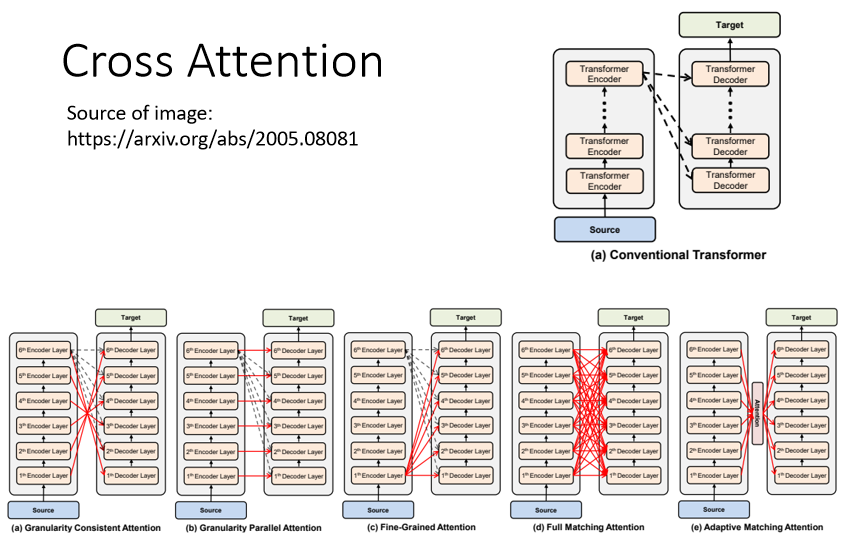
Encoder 这边有很多层，Decoder 这边有很多层，为什么 Decoder 这边每一层都一定要看，Encoder 的最后一层输出呢，能不能够有各式各样不同的连接方式，这完全可以当做一个研究的问题来 Study
Training¶
已经清楚说 Input 一个 Sequence，是怎么得到最终的输出，那接下来就进入训练的部分
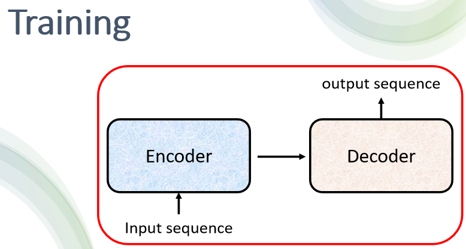
刚才讲的都还只是，假设你模型训练好以后它是怎么运作的，它是怎么做 Testing 的，它是怎么做 Inference 的，Inference 就是 Testing ，那是怎么做训练的呢？
接下来就要讲怎么做训练，那如果是做语音辨识，那你要有训练资料，你要收集一大堆的声音讯号，每一句声音讯号都要有工读生来听打一下，打出说它的这个对应的词汇是什么
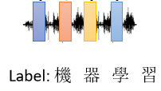
工读生听这段是机器学习，他就把机器学习四个字打出来，所以就知道说你的这个 Transformer，应该要学到 听到这段声音讯号，它的输出就是机器学习这四个中文字
那怎么让机器学到这件事呢
我们已经知道说输入这段声音讯号，第一个应该要输出的中文字是“机”，所以今天当我们把 BEGIN，丢给这个 Encoder 的时候，它第一个输出应该要跟“机”越接近越好
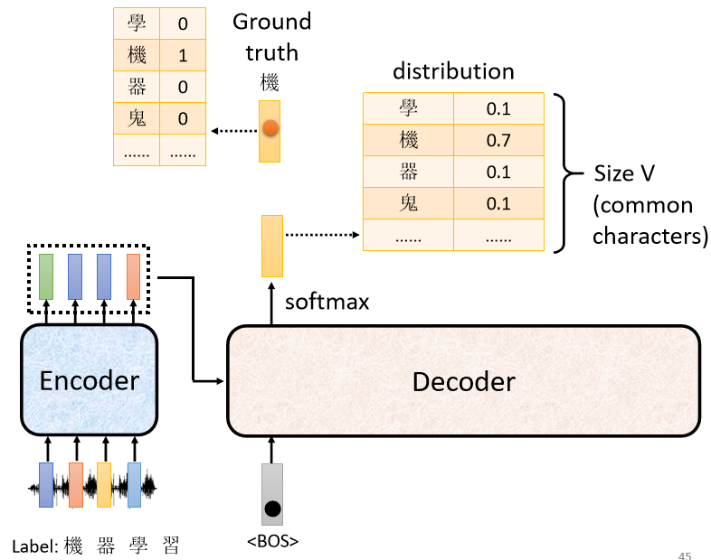
“机”这个字会被表示成一个 One-Hot 的 Vector，在这个 Vector 里面，只有机对应的那个维度是 1，其他都是 0，这是正确答案，那我们的 Decoder，它的输出是一个 Distribution，是一个机率的分布，我们会希望这一个机率的分布，跟这个 One-Hot 的 Vector 越接近越好
所以你会去计算这个 Ground Truth，跟这个 Distribution 它们之间的 Cross Entropy，然后我们希望这个 Cross Entropy 的值，越小越好
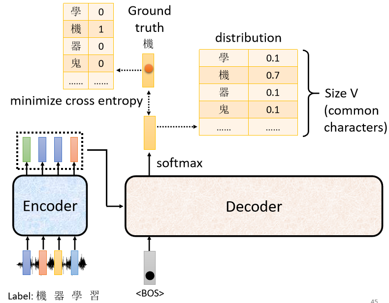
它就跟分类很像，刚才助教在讲解作业的时候也有提到这件事情，你可以想成每一次我们在产生，每一次 Decoder 在产生一个中文字的时候，其实就是做了一次分类的问题，中文字假设有四千个，那就是做有四千个类别的分类的问题
所以实际上训练的时候这个样子，我们已经知道输出应该是“机器学习”这四个字，就告诉你的 Decoder ，现在你第一次的输出 第二次的输出，第三次的输出 第四次输出，应该分别就是“机” “器” “学”跟“习”，这四个中文字的 One-Hot Vector，我们希望我们的输出，跟这四个字的 One-Hot Vector 越接近越好
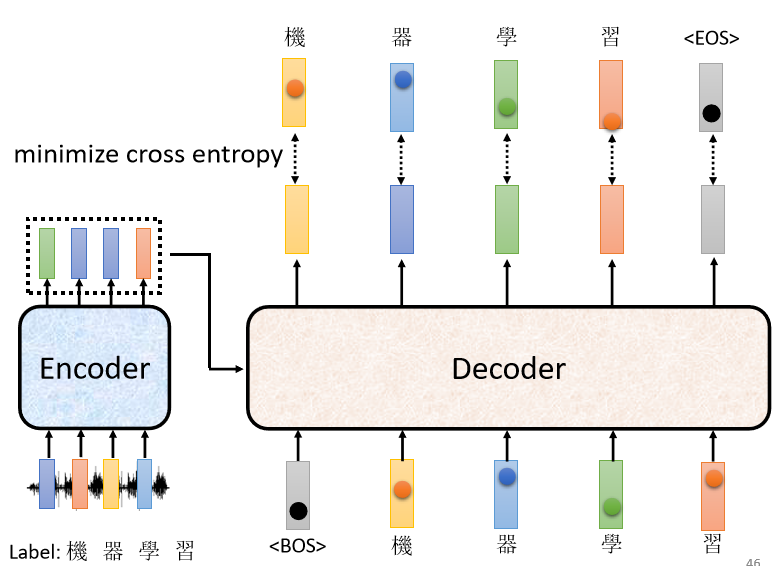
在训练的时候，每一个输出都会有一个 Cross Entropy，每一个输出跟 One-Hot Vector，跟它对应的正确答案都有一个 Cross Entropy，我们要希望所有的 Cross Entropy 的总和最小，越小越好
所以这边做了四次分类的问题，我们希望这些分类的问题，它总合起来的 Cross Entropy 越小越好，还有 END 这个符号
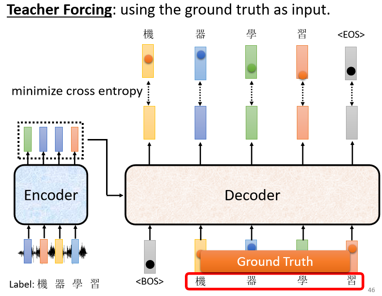
那这个就是 Decoder 的训练：把 Ground Truth ，正确答案给它，希望 Decoder 的输出跟正确答案越接近越好
那这边有一件值得我们注意的事情，在训练的时候我们会给 Decoder 看正确答案，也就是我们会告诉它说
- 在已经有 "BEGIN"，在有"机"的情况下你就要输出"器"
- 有 "BEGIN" 有"机" 有"器"的情况下输出"学"
- 有 "BEGIN" 有"机" 有"器" 有"学"的情况下输出"习"
- 有 "BEGIN" 有"机" 有"器" 有"学" 有"习"的情况下，你就要输出"断"
在 Decoder 训练的时候，我们会在输入的时候给它正确的答案，那这件事情叫做 Teacher Forcing
那这个时候你马上就会有一个问题了
- 训练的时候，Decoder 有偷看到正确答案了
- 但是测试的时候，显然没有正确答案可以给 Decoder 看
刚才也有强调说在真正使用这个模型，在 Inference 的时候，Decoder 看到的是自己的输入，这中间显然有一个 Mismatch，那等一下我们会有一页投影片的说明，有什么样可能的解决方式
Tips¶
那接下来，不局限于 Transformer ，讲一些训练这种 Sequence To Sequence Model 的Tips
Copy Mechanism¶
在我们刚才的讨论里面，我们都要求 Decoder 自己产生输出，但是对很多任务而言，也许 Decoder 没有必要自己创造输出出来，它需要做的事情，也许是从输入的东西里面复制一些东西出来
像这种复制的行为在哪些任务会用得上呢，一个例子是做聊天机器人
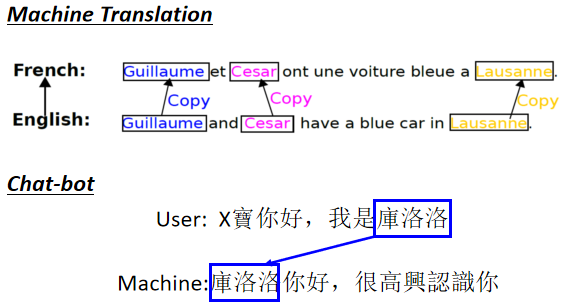
-
人对机器说：你好 我是库洛洛，
-
机器应该回答说：库洛洛你好 很高兴认识你
对机器来说，它其实没有必要创造库洛洛这个词汇，这对机器来说一定会是一个非常怪异的词汇，所以它可能很难，在训练资料里面可能一次也没有出现过，所以它不太可能正确地产生这段词汇出来
但是假设今天机器它在学的时候，它学到的是看到输入的时候说我是某某某，就直接把某某某，不管这边是什么复制出来说某某某你好
那这样子机器的训练显然会比较容易，它显然比较有可能得到正确的结果，所以复制对于对话来说，可能是一个需要的技术 需要的能力
Summarization¶
或者是在做摘要的时候，你可能更需要 Copy 这样子的技能
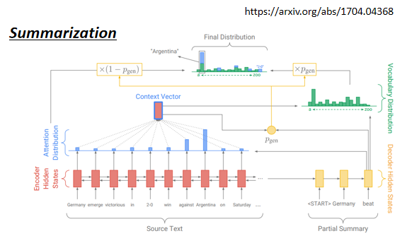
摘要就是，你要训练一个模型，然后这个模型去读一篇文章，然后产生这篇文章的摘要
那这个任务完全是有办法做的，你就是收集大量的文章，那每一篇文章都有人写的摘要，然后你就训练一个，Sequence-To-Sequence 的 Model，就结束了
你要做这样的任务，只有一点点的资料是做不起来的，有的同学收集个几万篇文章，然后训练一个这样的 Sequence-To-Sequence Model，发现结果有点差
你要训练这种，你要叫机器说合理的句子，通常这个==百万篇文章==是需要的，所以如果你有百万篇文章，那些文章都有人标的摘要，那有时候你会把，直接把文章标题当作摘要，那这样就不需要花太多人力来标，你是可以训练一个，直接可以帮你读一篇文章，做个摘要的模型
对摘要这个任务而言，其实从文章里面直接复制一些资讯出来，可能是一个很关键的能力，那 Sequence-To-Sequence Model，有没有办法做到这件事呢，那简单来说就是有，那我们就不会细讲
最早有从输入复制东西的能力的模型，叫做 Pointer Network
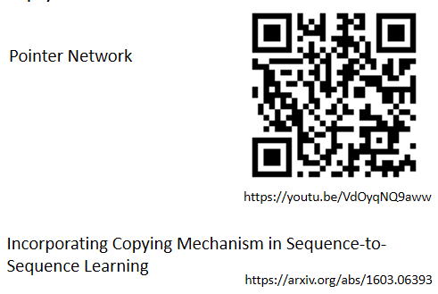
那这个过去上课是有讲过的，我把录影放在这边给大家参考，好 那后来还有一个变形，叫做 Copy Network，那你可以看一下这一篇，Copy Mechanism，就是 Sequence-To-Sequence，有没有问题，你看 Sequence-To-Sequence Model，是怎么做到从输入复制东西到输出来的
Guided Attention¶
机器就是一个黑盒子，有时候它里面学到什么东西，你实在是搞不清楚，那有时候它会犯非常低级的错误
这边举的例子是语音合成
你完全可以就是训练一个 Sequence-To-Sequence 的 Model，Transformer 就是一个例子
- 收集很多的声音，文字跟声音讯号的对应关系
- 然后接下来告诉你的，Sequence-To-Sequence Model ，看到这段中文的句子，你就输出这段声音
- 然后就没有然后，就==硬 Train 一发==就结束了，然后机器就可以学会做语音合成了
像这样的方法做出来结果，其实还不错，
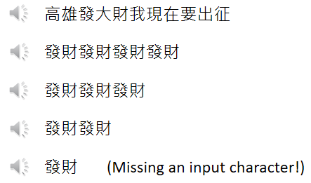
举例来说我叫机器连说 4 次发财，看看它会怎么讲，机器输出的结果是:发财 发财 发财 发财
就发现很神奇，我输入的发财是明明是同样的词汇，只是重复 4 次，机器居然自己有一些抑扬顿挫，它怎么学到这件事，不知道，它自己训练出来就是这个样子
那你让它讲 3 次发财也没问题，那它讲 2 次发财也没问题，让它讲 1 次发财，它不念“发”
不知道为什么这样子，就是你这个 Sequence-To-Sequence Model，有时候 Train 出来就是，会产生莫名其妙的结果，也许在训练资料里面，这种非常短的句子很少，所以机器不知道要怎么处理这种非常短的句子，你叫它念发财，它把发省略掉只念财，你居然叫它念 4 次的发财，重复 4 次没问题，叫它只念一次，居然会有问题，就是这么的奇怪
当然其实这个例子并没有那么常出现，就这个用 Sequence-To-Sequence，Learn 出来 TTS，也没有你想象的那么差，这个要找这种差的例子也是挺花时间的，要花很多时间才找得到这种差的例子，但这样子的例子是存在的
所以怎么办呢
我们刚才发现说机器居然漏字了，输入有一些东西它居然没有看到，我们能不能够强迫它，一定要把输入的每一个东西通通看过呢
这个是有可能的，这招就叫做 Guided Attention
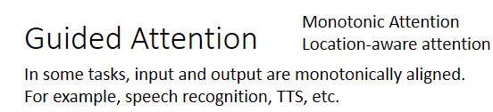
像语音辨识这种任务，你其实很难接受说，你讲一句话，今天辨识出来，居然有一段机器没听到，或语音合成你输入一段文字，语音合出来居然有一段没有念到，这个人很难接受
那如果是其它应用，比如说 Chat Bot，或者是 Summary，可能就没有那么严格，因为对一个 Chat Bot 来说，输入后一句话，它就回一句话，它到底有没有把整句话看完，其实你 Somehow 也不在乎，你其实也搞不清楚
但是对语音辨识 语音合成，Guiding Attention，可能就是一个比较重要的技术
Guiding Attention 要做的事情就是，要求机器它在做 Attention 的时候，是有固定的方式的，举例来说，对语音合成或者是语音辨识来说，我们想象中的 Attention，应该就是由左向右
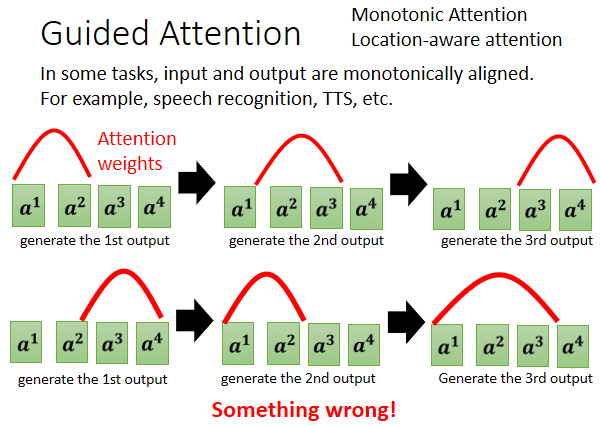
在这个例子里面，我们用红色的这个曲线，来代表 Attention 的分数，这个越高就代表 Attention 的值越大
我们以语音合成为例，那你的输入就是一串文字，那你在合成声音的时候，显然是由左念到右，所以机器应该是，先看最左边输入的词汇产生声音，再看中间的词汇产生声音，再看右边的词汇产生声音
如果你今天在做语音合成的时候，你发现机器的 Attention，是颠三倒四的，它先看最后面，接下来再看前面，那再胡乱看整个句子，那显然有些是做错了，显然有些是，Something is wrong，有些是做错了，
所以 Guiding Attention 要做的事情就是，强迫 Attention 有一个固定的样貌，那如果你对这个问题，本身就已经有理解知道说，语音合成 TTS 这样的问题，你的 Attention 的分数，Attention 的位置都应该由左向右，那不如就直接把这个限制，放进你的 Training 里面，要求机器学到 Attention，就应该要由左向右
那这件事怎么做呢，有一些关键词汇我就放在这边，让大家自己 Google 了，比如说某某 Mnotonic Attention，或 Location-Aware 的 Attention，那这个部分也是大坑，也不细讲，那就留给大家自己研究
Beam Search¶
Beam Search ，我们这边举一个例子，在这个例子里面我们假设说，我们现在的这个 Decoder就只能产生两个字，一个叫做 A 一个叫做 B
那对 Decoder 而言，它做的事情就是，每一次在第一个 Time Step，它在 A B 里面决定一个，然后决定了 A 以后，再把 A 当做输入，然后再决定 A B 要选哪一个
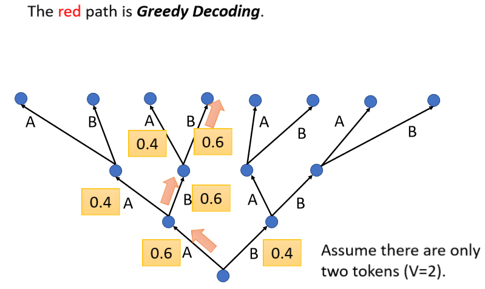
那举例来说，它可能选 B 当作输入，再决定 A B 要选哪一个，那在我们刚才讲的 Process 里面，每一次 Decoder 都是选，分数最高的那一个
我们每次都是选Max 的那一个，所以假设 A 的分数 0.6，B 的分数 0.4，Decoder 的第一次就会输出 A，然后接下来假设 B 的分数 0.6，A 的分数 0.4，Decoder 就会输出 B，好，然后再假设把 B 当做 Input，就现在输入已经有 A 有 B 了，然后接下来，A 的分数 0.4，B 的分数 0.6，那 Decoder 就会选择输出 B，所以输出就是 A 跟 B 跟 B
那像这样子每次找分数最高的那个 Token，每次找分数最高的那个字，来当做输出这件事情叫做，Greedy Decoding
但是 Greedy Decoding，一定是更好的方法吗，有没有可能我们在第一步的时候，先稍微捨弃一点东西
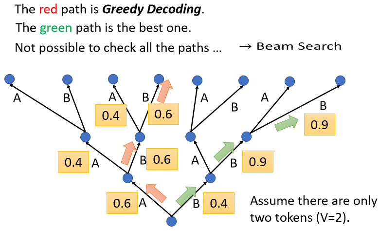
比如说第一步虽然 B 是 0.4，但我们就先选 0.4 这个 B，然后接下来我们选了 B 以后，也许接下来的 B 的可能性就大增，就变成 0.9，然后接下来第三个步骤，B 的可能性也是 0.9
如果你比较红色的这一条路，跟绿色这条路的话，你会发现说绿色这一条路，虽然一开始第一个步骤，你选了一个比较差的输出，但是接下来的结果是好的
这个就跟那个天龙八部的真龙棋局一样，对不对，先堵死自己一块，结果接下来反而赢了
那所以我，如果我们要怎么找到，这个最好的绿色这一条路呢，也许一个可能是，爆搜所有可能的路径，但问题是我们实际上，并没有办法爆搜所有可能的路径，因为实际上每一个转捩点可以的选择太多了，如果是在对中文而言，我们中文有 4000 个字，所以这个树每一个地方分叉，都是 4000 个可能的路径，你走两三步以后，你就无法穷举
所以怎么办呢，有一个演算法叫做 Beam Search，它用比较有效的方法，找一个 Approximate，找一个估测的 Solution，找一个不是很精准的，不是完全精准的 Solution，这个技术叫做 Beam Search，那这个也留给大家自己 Google，好
那这个 Beam Search 这个技术，到底有没有用呢，有趣的事就是，它有时候有用，有时候没有用，你会看到有些文献告诉你说，Beam Search 是一个很烂的东西
举例来说这篇 Paper 叫做，The Curious Case Of Neural Text Degeneration，那这个任务要做的事情是，Sentence Completion，也就是机器先读一段句子，接下来它要把这个句子的后半段，把它完成，你给它一则新闻，或者是一个故事的前半部，哇 它自己发挥它的想象创造力，把这个文章，把故事的后半部把它写完
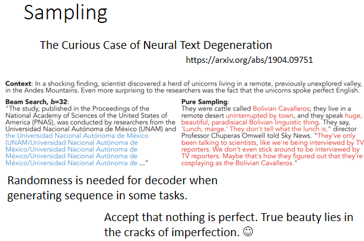
那你会发现说，Beam Search 在这篇文章里面，一开头就告诉你说，Beam Search 自己有问题：如果你用 Beam Search 的话，会发现说机器不断讲重复的话，它不断开始陷入鬼打墙 无穷回圈，不断说重复的话
如果你今天不是用 Beam Search，有加一些随机性，虽然结果不一定完全好，但是看起来至少是比较正常的句子，所以有趣的事情是，有时候对 Decorder 来说，没有找出分数最高的路，反而结果是比较好的
这个时候你又觉得乱乱的 对不对，就是刚才前一页投影片才说，要找出分数最高的路，现在又要讲说找出分数最高的路不见得比较好，到底是怎么回事呢
那其实这个就是要，看你的任务的本身的特性
-
就假设一个任务，它的答案非常地明确
举例来说，什么叫答案非常明确呢，比如说语音辨识，说一句话辨识的结果就只有一个可能，就那一串文字就是你唯一可能的正确答案，并没有什么模糊的地带
对这种任务而言，通常 Beam Search 就会比较有帮助，那什么样的任务
-
你需要机器发挥一点创造力的时候，这时候 Beam Search 就比较没有帮助，
举例来说在这边的 Sentence Completion，给你一个句子，给你故事的前半部，后半部有无穷多可能的发展方式，那这种需要有一些创造力的，有不是只有一个答案的任务，往往会比较需要在 Decoder 里面，加入随机性，还有另外一个 Decoder，也非常需要随机性的任务，叫做语音合成，TTS 就是语音合成的缩写
这也许就呼应了一个英文的谚语，就是要接受没有事情是完美的，那真正的美也许就在不完美之中，对于 TTS 或 Sentence Completion 来说，Decoder 找出最好的结果，不见得是人类觉得最好的结果，反而是奇怪的结果，那你加入一些随机性，结果反而会是比较好的
Optimizing Evaluation Metrics?¶
在作业里面，我们评估的标准用的是，BLEU Score，BLEU Score 是你的 Decoder，先产生一个完整的句子以后，再去跟正确的答案一整句做比较，我们是拿两个句子之间做比较，才算出 BLEU Score
但我们在训练的时候显然不是这样，训练的时候，每一个词汇是分开考虑的，训练的时候，我们 Minimize 的是 Cross Entropy，Minimize Cross Entropy，真的可以 Maximize BLEU Score 吗
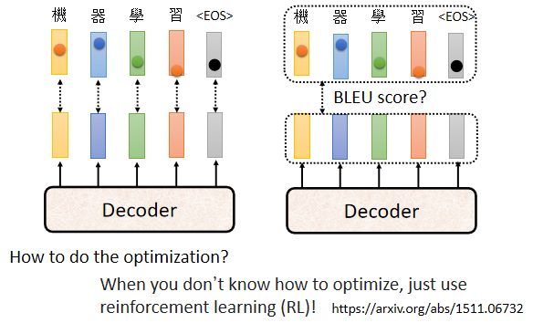
不一定，因为这两个根本就是，它们可能有一点点的关联，但它们又没有那么直接相关，它们根本就是两个不同的数值，所以我们 Minimize Cross Entropy，不见得可以让 BLEU Score 比较大
所以你发现说在助教的程式里面，助教在做 Validation 的时候，并不是拿 Cross Entropy 来挑最好的 Model，而是挑 BLEU Score 最高的那一个 Model，所以我们训练的时候，是看 Cross Entropy，但是我们实际上你作业真正评估的时候，看的是 BLEU Score，所以你 Validation Set，其实应该考虑用 BLEU Score
那接下来有人就会想说，那我们能不能在 Training 的时候，就考虑 BLEU Score 呢，我们能不能够训练的时候就说，我的 Loss 就是，BLEU Score 乘一个负号，那我们要 Minimize 那个 Loss，假设你的 Loss 是，BLEU Score乘一个负号，它也等于就是 Maximize BLEU Score
但是这件事实际上没有那么容易，你当然可以把 BLEU Score，当做你训练的时候，你要最大化的一个目标，但是 BLEU Score 本身很复杂，它是不能微分的，
这边之所以采用 Cross Entropy，而且是每一个中文的字分开来算，就是因为这样我们才有办法处理，如果你是要计算，两个句子之间的 BLEU Score，这一个 Loss，根本就没有办法做微分，那怎么办呢
这边就教大家一个口诀，遇到你在 Optimization 无法解决的问题，==用 RL 硬 Train 一发==就对了这样，遇到你无法 Optimize 的 Loss Function，把它当做是 RL 的 Reward，把你的 Decoder 当做是 Agent，它当作是 RL，Reinforcement Learning 的问题硬做
其实也是有可能可以做的，有人真的这样试过，我把 Reference 列在这边给大家参考，当然这是一个比较难的做法，那并没有特别推荐你在作业里面用这一招
Scheduled Sampling¶
那我们要讲到，我们刚才反复提到的问题了，就是训练跟测试居然是不一致的
测试的时候，Decoder 看到的是自己的输出，所以测试的时候，Decoder 会看到一些错误的东西，但是在训练的时候，Decoder 看到的是完全正确的，那这个不一致的现象叫做，Exposure Bias
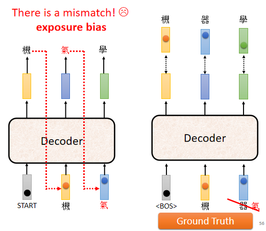
假设 Decoder 在训练的时候，永远只看过正确的东西，那在测试的时候，你只要有一个错，那就会一步错 步步错，因为对 Decoder 来说，它从来没有看过错的东西，它看到错的东西会非常的惊奇，然后接下来它产生的结果可能都会错掉
所以要怎么解决这个问题呢
有一个可以的思考的方向是，给 Decoder 的输入加一些错误的东西，就这么直觉，你不要给 Decoder 都是正确的答案，偶尔给它一些错的东西，它反而会学得更好，这一招叫做，Scheduled Sampling，它不是那个 Schedule Learning Rate，刚才助教有讲 Schedule Learning Rate，那是另外一件事，不相干的事情，这个是 Scheduled Sampling
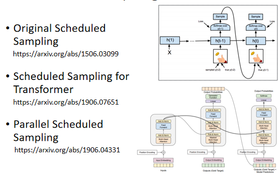
Scheduled Sampling 其实很早就有了，这个是 15 年的 Paper，很早就有 Scheduled Sampling，在还没有 Transformer，只有 LSTM 的时候，就已经有 Scheduled Sampling，但是 Scheduled Sampling 这一招，它其实会伤害到，Transformer 的平行化的能力，那细节可以再自己去了解一下，所以对 Transformer 来说，它的 Scheduled Sampling，另有招数跟传统的招数，跟原来最早提在，这个 LSTM上被提出来的招数，也不太一样，那我把一些 Reference 的，列在这边给大家参考
好 那以上我们就讲完了，Transformer 和种种的训练技巧，这个我们已经讲完了 Encoder，讲完了 Decoder，也讲完了它们中间的关系，也讲了怎么训练，也讲了种种的 Tip
本文总阅读量次